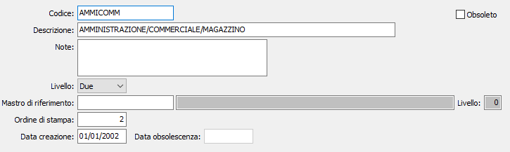

Mastri

CODICE MASTRO: codice alfanumerico di 15 caratteri, a libera scelta dell’utente. Sul campo sono attive le funzioni di ricerca (F9) sulla tabella stessa.
DESCRIZIONE: campo alfanumerico di 50 caratteri per la descrizione del mastro.
NOTE: campo note su più righe per inserire eventuali annotazioni in merito all’utilizzazione del mastro.
LIVELLO: indica il livello di appartenenza del mastro all'interno del piano dei conti analitico. Il livello può contenere valori da 1 a 6, ma non potrà essere impostato ad un valore superiore a quello espresso nel campo "Numero livelli mastro" definito in configurazione contabilità analitica.
MASTRO DI RIFERIMENTO: indica il mastro di appartenenza del mastro corrente, dovrà avere un livello superiore a quello indicato nel campo precedente. Sul campo sono attive le funzioni di ricerca (F9) sulla tabella stessa.
ORDINE DI STAMPA: indica il numero d'ordine valido per l'ordinamento in fase di stampa o visualizzazione piano dei conti analitico.
DATA CREAZIONE: indica la data in cui il codice è stato caricato. Al momento del caricamento di un nuovo record in questo campo viene proposta la data di sistema.
DATA OBSOLESCENZA: indica la data in cui il codice è stato dichiarato obsoleto.
OBSOLETO: flag attivabile dall’utente per inibire il possibile utilizzo dell’elemento di tabella in esame nelle successive transazioni. Spuntando la casella sarà automaticamente assegnata alla data obsolescenza la data di sistema.